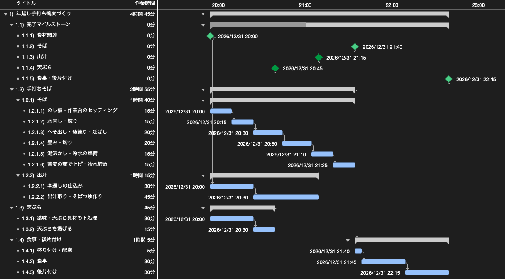
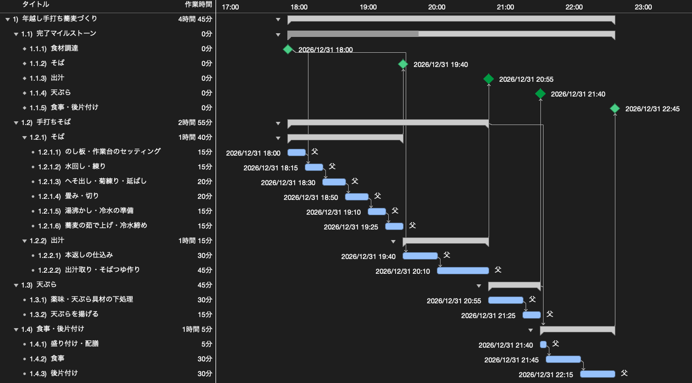
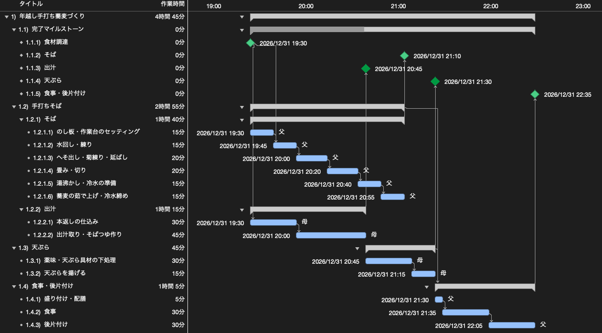
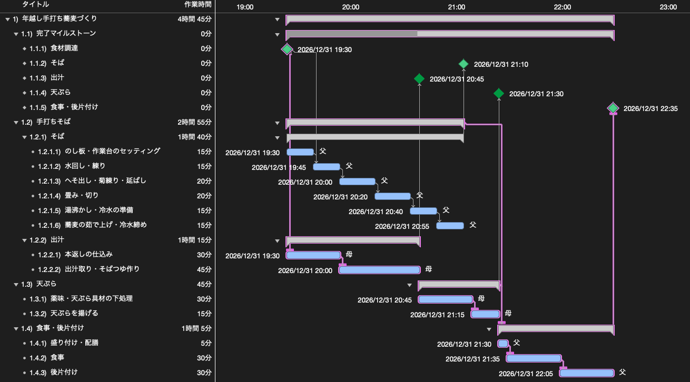
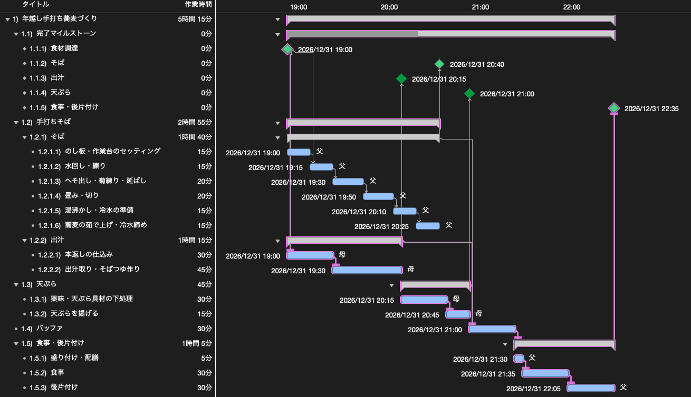

年越し手打ち蕎麦を作るWBSを作ってみた
今回は「WBSで覗いてみた」として、「年越し手打ち蕎麦を作るWBS」を作成しました。大晦日に手打ち蕎麦を作り、年越し前に片付けまで完了させる身近なシナリオを題材に、リソースを割り当てない状態から、担当者を1人に集中させた場合の平準化、2人体制による並行作業、クリティカルパスの特定、実運用でのバッファ設定、対外的なマイルストーンの共有まで、WBSを通じて詳しく検証していきます。
※そもそも「WBSとは何か？」について詳しく知りたい方は、こちらの記事「WBSの勘所」や「ガントチャートの決め手は平準化」も合わせてご覧ください。
1. 割り当てなし
まずは本格的な十割手打ち蕎麦の工程を参考に、そば打ち、出汁取り、天ぷら、食事・片付けまでの全作業を洗い出し、タスクの前後関係のみを定義したWBSを作成してみます。

このガントチャートを見ると、全体の所要時間は20:00開始から22:45完了までの2時間45分となっています。
しかし、タイムラインを確認すると、20:00の時点でそば打ち、出汁取り、天ぷらの下処理がすべて同時に進行するスケジュールになっています。担当者が未割り当ての状態では、このように複数人が同時に作業を行う前提のスケジュールとなります。
2. 父のみを設定し平準化した場合
続いて、すべての作業をお父さん1人が担当した場合をシミュレーションしてみます。全タスクにお父さんを割り当て、作業の重複を解消する平準化を行います。
23:00に片付けまで完了させる前提で逆算してスケジュールを算出しました。

平準化を行った結果、並行していたすべてのタスクが直列化し、作業時間の合計は4時間45分となりました。
23:00に完了させるためには、夕方18:00から作業を開始する必要があります。すべての工程が一本道でつながっているため、どこか1つの工程でも遅れると全体の完了時刻が後ろにずれ込んでしまいます。
3. 母を追加した場合
そこで、お母さんにも協力してもらい、2名体制で作業を分担してみます。
お父さんがそば打ちと片付けを担当し、お母さんが出汁取りと天ぷらを担当する形で役割を分け、再度平準化を行いました。

2名体制にしたことで作業の並行化が進み、スケジュールが改善されました。
全体の開始時刻は19:30となり、1人作業と比べて1時間30分遅くスタートできるようになります。19:30にお父さんとお母さんが同時に作業を開始し、21:30に天ぷらが揚がったタイミングで合流して食事・片付けへと進みます。
4. クリティカルパスの確認
次に、この2人体制のスケジュールにおいて、全体の完了時刻を左右している最長経路であるクリティカルパスを確認してみます。

ガントチャート上でピンク色の線で示されているのがクリティカルパスです。
クリティカルパスの流れを見ると、お母さんが担当する出汁取りから天ぷらの工程がクリティカルパスになっていることが分かります。一方、お父さんのそば打ち工程は21:10に完了しており、天ぷらが揚がる21:30までの間に20分の余裕時間があります。
手打ち蕎麦づくりではありますが、全体の完了時刻を決定づけているボトルネックはお母さんの調理ラインであることが可視化されます。
5. 実運用でのバッファの設定イメージ
実際の作業では、粉の水加減の調整や油の温度調整など、予定通りに進まない場面も起こり得ます。
そこで、天ぷらの完成から食事開始までの合流地点に、30分のバッファを設定してみます。

バッファを組み込んだ結果、全体の開始時刻は19:00となりました。
19:00から作業を開始し、21:00までにそば打ちと天ぷらを完了させ、21:00〜21:30をバッファとして確保しています。順調に進めばこの時間を作業の合間の休憩にあてることができ、遅れが発生した場合でも30分以内であれば予定通り22:35には片付けまで完了できます。
6. 対外的なマイルストーンの共有
スケジュールとバッファが定まったら、最後にプロジェクトの進捗を共有する方法を整理します。
チーム内（お父さんとお母さん）ではWBS全体を見せ合い、プロジェクト全体の進行状況や各人の現在地を共有します。一方、対外的（家族など）には詳細な作業工程ではなく、マイルストーンだけを見せて大枠を報告する形をとります。
詳細な作業手順をそのまま外部へ共有すると細かな確認や調整が増えてしまうことがありますが、マイルストーンに絞って共有することで、関係者が必要な情報だけを把握しやすくなります。
終わりに
身近な手打ち蕎麦づくりであっても、WBSを作成してリソースの割り当てや平準化、クリティカルパス、バッファ、マイルストーンの設定を行うことで、作業の見通しやボトルネックが明確になります。
日常の業務やプロジェクト計画においても、リソースの制約や不確実性を考慮したスケジュール設計の参考にしていただければ幸いです。